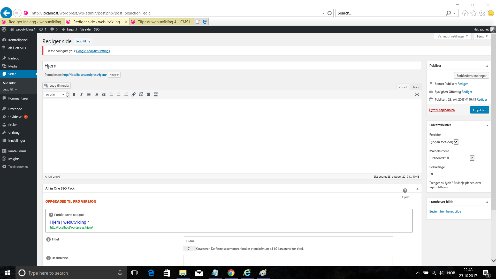
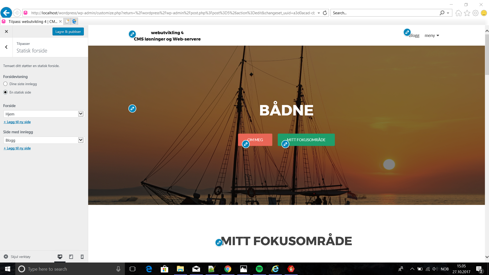
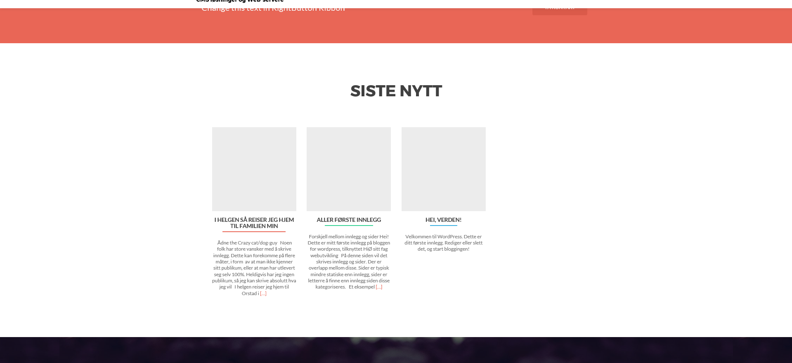
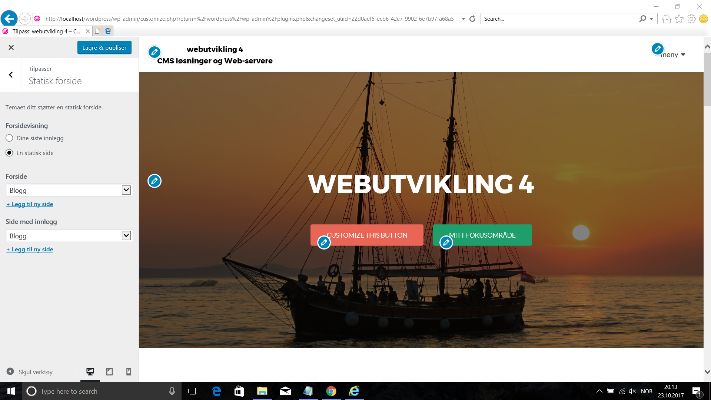
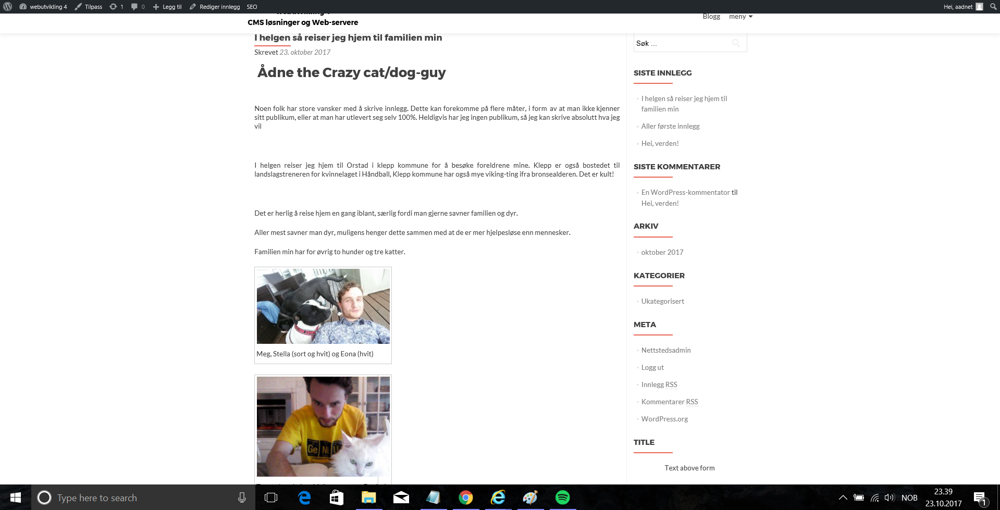

Statiske og dynamiske sider i wordpress
Statisk vs. dynamisk forside
En dynamisk side er noe som endres i takt med endringer som evt. skjer, for eksempel innlegg som legges ut kommer gjerne først på denne siden. En side som ikke oppdateres på samme måte representerer antonymet til dette og kalles derfor statisk. Et nettsted kan gjerne bestå av begge deler
Hvordan faktisk gjøre en side om til en statisk forside?
Dersom vi ønsker å vise konstante ting, f.eks en firmaside som er relativt bra designet, vil det være bra å ha en statisk forside. Prosedyren for å lage en statisk side er ganske rett fram Det første vi bør gjøre er å lage en tom side kalle denne hjem og ikke fylle det med noen ting, deretter gå inn på modifikasjoner. Her kan vi modifisere den valgte siden, og trykke om den skal være statisk eller dynamisk.
 {kind=link}
{kind=link}
I tilfellet med dette temaet så blir de siste innleggene lagt lenger ned i en seksjon på siden. 
{kind=link}
Å gjøre om en side til et dynamisk nettsted
På blogger eller andre steder hvor vi oppdaterer kontinuerlig vil der være en fordel å ha ihvertfall en side som er dynamisk. For å velge en dynamisk side gjøres dette enkelt vha å trykke på den andre radio-knappen og å velge ifra listen hvilken side som skal være blogg, resultatet blir noe ala dette. Her vil innleggene på vises helt kronologisk.
 {kind=link}